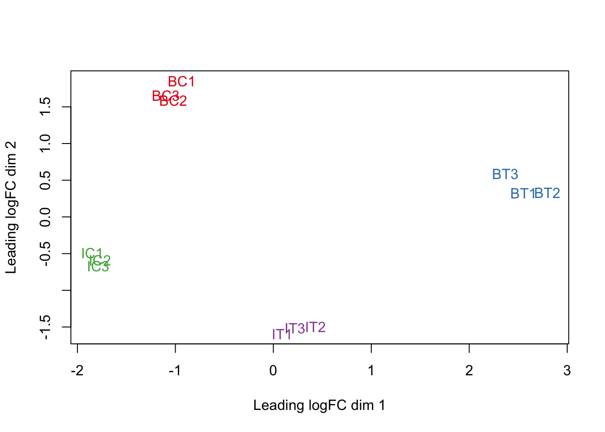
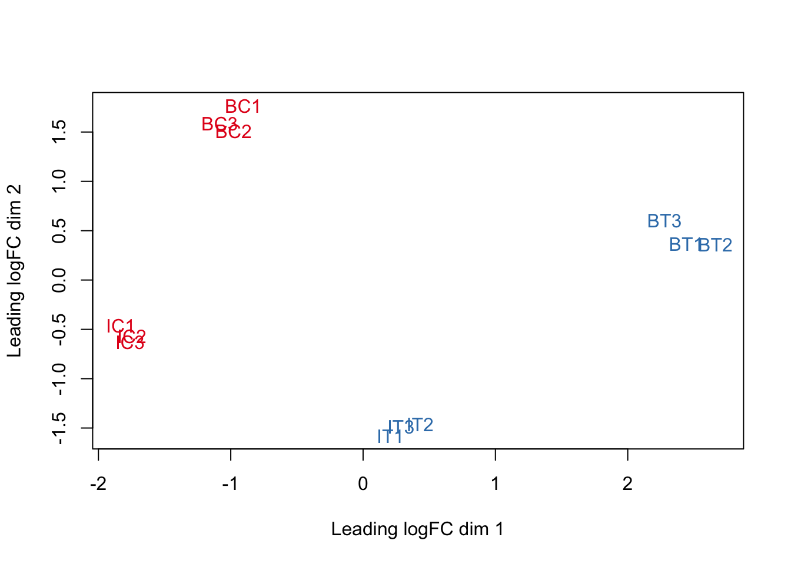
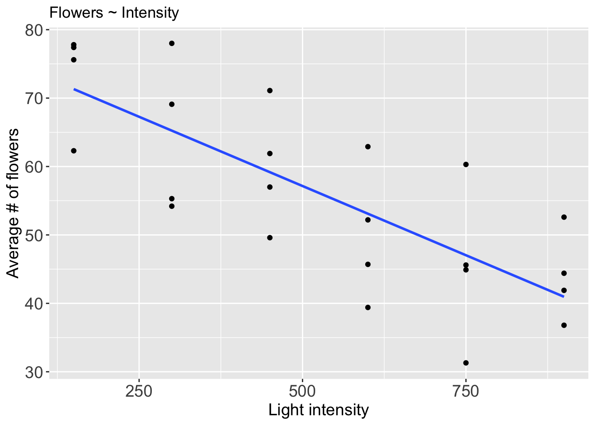
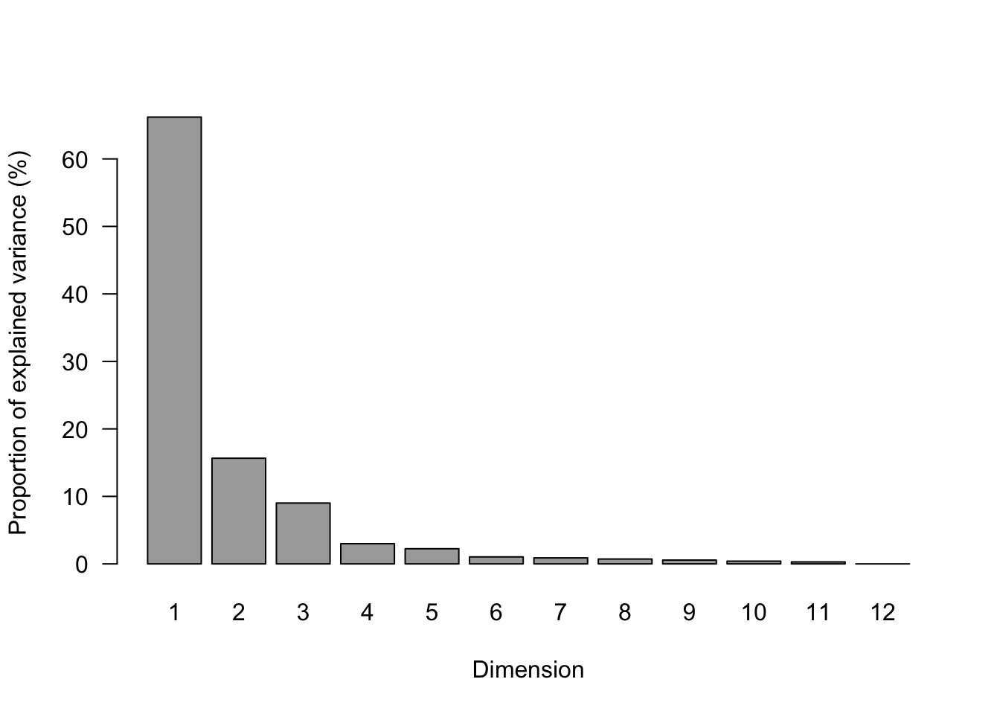

Data Preprocessing and Fitting Models
0.1 Data preprocessing
0.1.1 Overview
- Reading in table of counts
- Filtering lowly expressed genes
- Quality control
- Normalization for composition bias
- Identifying deferentially expressed genes (DEGs):
- Fitting regression models and;
- Hypothesis testing
0.1.2 Data import
Data for this workshop comes from a Nature Scientific Data paper by Zhang et al., 2018. The study examimes mechanisms of saline adaptaion of a plant (Strophostyles helvola) related to the common bean (Phaseolus vulgaris). Briefly stated, the study reported the RNA-seq analyses of two genotypes (a salt tolerant beach genotype and a salt-sensitive inland genotype, and provided sequence data for community use. Sequence data was deposited in into the National Center for Biotechnology Information (NCBI) Sequence Read Archive (SRA) repository, and the abundance count for all the samples was deposited at Gene Expression Omnibus (GEO) database.
First, load required packages:
library(edgeR) #Main package for DE analysis
library(tidyverse) #Data wrangling package, includes ggplot2, dplyr, tidy, readr
library(RColorBrewer) #Colour scheme for plotting
library(Glimma) #Interactive MD plots
library(gplots)For this workshop, the count data from the study will be obtained from the figshare repository, as shown bellow:
download.file(url = "https://ndownloader.figshare.com/files/23241812",
destfile = "gene_counts.txt")Import data into R:
raw_counts <- read.table(file="../gene_counts.txt",
sep = "\t",
header = TRUE
)This is a data frame with the first 6 columns describing features (genes). Samples are from column number 7 (SRR).
head(raw_counts)Change sample names from the SRR to reflect sample information, such that: IT: inland treated; IC: inland control; BT: beach treated; BC: beach control
names(raw_counts)[7:18] <- c("IT2", "BC2", "IC3", "IT1", "BC3", "BT1", "BC1", "IT3", "IC1", "IC2", "BT2", "BT3")
head(raw_counts)Reorder columns to group treatment samples together, for each location
raw_counts <- raw_counts[ , c(1:6, 9,15,16,7,10,14,8,11,13,12,17,18)]
head(raw_counts)Import the count data into the edgeR package. This will create a DGEList object for edgeR. The object has a number of slots for storing various parameters about the data.
dge <- DGEList(counts = raw_counts[ , 7:18],
lib.size = colSums(raw_counts[ , 7:18]),
norm.factors = rep(1,ncol(raw_counts[ , 7:18])),
samples = NULL,
group = NULL,
genes = raw_counts[ , 1:6])View the different data types contained in the object:
dge## An object of class "DGEList"
## $counts
## IC3 IC1 IC2 IT2 IT1 IT3 BC2 BC3 BC1 BT1 BT2 BT3
## 1 142 111 91 138 154 132 123 116 133 128 116 147
## 2 0 0 0 0 0 0 0 0 0 0 0 0
## 3 3742 3329 3433 3458 3979 4190 3530 3339 3597 2912 2652 3121
## 4 236 214 208 237 259 252 258 207 309 216 172 221
## 5 1650 1908 1701 1624 1955 2136 1351 1551 1639 902 621 730
## 27192 more rows ...
##
## $samples
## group lib.size norm.factors
## IC3 1 40619905 1
## IC1 1 35114368 1
## IC2 1 34833786 1
## IT2 1 36399307 1
## IT1 1 41939123 1
## 7 more rows ...
##
## $genes
## Geneid Chr Start End Strand Length
## 1 Phvul.001G000100.v1.0 Chr01 3852 11015 - 7164
## 2 Phvul.001G000200.v1.0 Chr01 99177 104451 - 5275
## 3 Phvul.001G000300.v1.0 Chr01 125452 132387 + 6936
## 4 Phvul.001G000400.v1.0 Chr01 134609 140566 - 5958
## 5 Phvul.001G000500.v1.0 Chr01 144309 146169 + 1861
## 27192 more rows ...Add sample and location information
#Treatment (group)
treatment<-as.factor(rep(c("IC","IT","BC","BT"), c(3,3,3,3)))
#Location:
location<-as.factor(rep(c("inland","beach"),c(6,6)))
dge$samples$group<-treatment
dge$samples$location<-location
#View the object again:
dge## An object of class "DGEList"
## $counts
## IC3 IC1 IC2 IT2 IT1 IT3 BC2 BC3 BC1 BT1 BT2 BT3
## 1 142 111 91 138 154 132 123 116 133 128 116 147
## 2 0 0 0 0 0 0 0 0 0 0 0 0
## 3 3742 3329 3433 3458 3979 4190 3530 3339 3597 2912 2652 3121
## 4 236 214 208 237 259 252 258 207 309 216 172 221
## 5 1650 1908 1701 1624 1955 2136 1351 1551 1639 902 621 730
## 27192 more rows ...
##
## $samples
## group lib.size norm.factors location
## IC3 IC 40619905 1 inland
## IC1 IC 35114368 1 inland
## IC2 IC 34833786 1 inland
## IT2 IT 36399307 1 inland
## IT1 IT 41939123 1 inland
## 7 more rows ...
##
## $genes
## Geneid Chr Start End Strand Length
## 1 Phvul.001G000100.v1.0 Chr01 3852 11015 - 7164
## 2 Phvul.001G000200.v1.0 Chr01 99177 104451 - 5275
## 3 Phvul.001G000300.v1.0 Chr01 125452 132387 + 6936
## 4 Phvul.001G000400.v1.0 Chr01 134609 140566 - 5958
## 5 Phvul.001G000500.v1.0 Chr01 144309 146169 + 1861
## 27192 more rows ...Save a copy of the DGEList object in order to maintain an original copy.
dge_orig<-dge
saveRDS(dge_orig, file = "dge_orig.rds")0.1.3 CPM transformation
We will transform raw read counts to expression counts: counts per million (CPM). While the majority of normalization methods work well, RPKM and total count normalization should be avoided in the context of DE analysis, no matter how often you see them applied in published studies. RPKM, FPKM etc are only needed if expression values need to be compared between different genes within the same sample for which the different gene lengths must be taken into consideration.
We’ll use the cpm function from the library (M D Robinson, McCarthy, and Smyth 2010).
cpm <- cpm(dge)
#raw counts are converted to CPM and log-CPM values using the cpm function
lcpm <- cpm(dge, log=TRUE)
L <- mean(dge$samples$lib.size) * 1e-6 #average library size in Millions
M <- median(dge$samples$lib.size) * 1e-6 #median lib size View the distrubution of log-CPM, for inland control replicates:
#summary(lcpm)
summary(cpm)[,1:3]## IC3 IC1 IC2
## Min. : 0.000 Min. : 0.000 Min. : 0.000
## 1st Qu.: 0.517 1st Qu.: 0.513 1st Qu.: 0.517
## Median : 9.183 Median : 9.512 Median : 9.244
## Mean : 36.769 Mean : 36.769 Mean : 36.769
## 3rd Qu.: 35.894 3rd Qu.: 36.737 3rd Qu.: 35.598
## Max. :14527.705 Max. :16703.447 Max. :14496.4140.1.4 Gene filtering
Genes with very low counts across all libraries provide little evidence for differential expression and they interfere with some of the statistical approximations that are used later in the pipeline. They also add to the multiple testing burden when estimating false discovery rates, reducing power to detect DEGs. These genes should be filtered out prior to further analysis.
We remove genes that are lowly expressed using the filterByExpr edgeR function. By default, the function keeps genes with about 10 read counts or more in a minimum number of samples, where the number of samples is chosen according to the minimum group sample size. The actual filtering uses CPM values rather than counts in order to avoid giving preference to samples with large library sizes. For example, if the median library size is about 51 million and 10/51 ≈ 0.2, so the filterByExpr function keeps genes that have a CPM of 0.2 or more in at least three samples.
keep.exprs <- filterByExpr(dge)
#Minimum read count can also be explicitly specified, for instance '5' bellow:
#keep.exprs <- filterByExpr(dge, min.count = 5, min.total.count = 5)
dge <- dge[keep.exprs,, keep.lib.sizes=FALSE]
dim(dge)## [1] 21665 12Learning check!
- What proportion of genes are kept after filtering?
Answer
dim(dge$counts)[1]/dim(dge_orig$counts)[1]## [1] 0.7965952
Let us plot Line graphs depicting the effect of filtering out genes with low expression values:
lcpm.cutoff <- log2(10/M + 2/L)
nsamples <- ncol(dge)
col <- brewer.pal(nsamples, "Paired")
par(mfrow=c(1,2))
plot(density(lcpm[,1]), col=col[1], lwd=2, ylim=c(0,0.26), las=2, main="", xlab="") #density with lcpm from unfiltered data
title(main="A. Raw data", xlab="Log-cpm")
abline(v=lcpm.cutoff, lty=3)
for (i in 2:nsamples){
den <- density(lcpm[,i])
lines(den$x, den$y, col=col[i], lwd=2)
}
#legend("topright", samplenames, text.col=col, bty="n")
lcpm2 <- cpm(dge, log=TRUE) #NOTE: reculculating lcpm from filtered data!!!
plot(density(lcpm2[,1]), col=col[1], lwd=2, ylim=c(0,0.26), las=2, main="", xlab="")
title(main="B. Filtered data", xlab="Log-cpm")
abline(v=lcpm.cutoff, lty=3)
for (i in 2:nsamples){
den <- density(lcpm2[,i])
lines(den$x, den$y, col=col[i], lwd=2)
}
#legend("topright", samplenames, text.col=col, bty="n")0.1.5 Normalization for sequencing depth differences
Bar plots bellow show need for normalization to account for different library sizes. We will use TMM normalization.
samplenames<-c("Inland_c3","Inland_c1","Inland_c2","Inland_t2","Inland_t1","Inland_t3",
"Beach_c2","Beach_c3","Beach_c1","Beach_t1","Beach_t2","Beach_t3")
#Lib sizes:
barplot(dge$samples$lib.size, las = 2, names.arg = samplenames)
The trimmed mean of M-values normalization method (TMM) is performed to eliminate composition biases between libraries (Mark D Robinson and Oshlack 2010). This generates a set of normalization factors, where the product of these factors and the library sizes defines the effective library size. The calcNormFactors function in edgeR calculates the normalization factors between libraries.
dge_unNorm<-dge #create a copy of normalized data
dge <- calcNormFactors(dge, method = "TMM")Note the change in normalization factors:
dge$samplesLet us plot distribution of expression values showing the effect of normalization
par(mfrow=c(1,2)) #creates two panels for plotting
lcpm <- cpm(dge_unNorm, log=TRUE)
boxplot(lcpm, las=2, col=col, main="")
title(main="Unnormalized data",ylab="Log-cpm")
lcpm <- cpm(dge, log=TRUE)
boxplot(lcpm, las=2, col=col, main="")
title(main="Normalized data",ylab="Log-cpm")
0.1.6 Multidimensional scaling (MDS) plots
By far, one of the most important plots we make when we analyze RNA-Seq data are MDSplots. An MDSplot is a visualization of a principle components analysis, which determines the greatest sources of variation in the data. A principle components analysis is an example of an unsupervised analysis, where we don’t need to specify the groups. If your experiment is well controlled and has worked well, what we hope to see is that the greatest sources of variation in the data are the treatments/groups we are interested in. It is also an incredibly useful tool for quality control and checking for outliers. We can use the plotMDS function to create the MDS plot.
Let us first assign different colours to the group information .
lcpm <- cpm(dge, log=TRUE)
col.group <- dge$samples$group
levels(col.group) <- brewer.pal(nlevels(col.group), "Set1")
col.group <- as.character(col.group)
plotMDS(lcpm, col=col.group) 
Note from the plot above that all replicates per condition (treatment, location) cluster together.
Learning check!
- What is the greatest source of variation in the data (i.e. what does dimension 1 represent)?
- What is the second greatest source of variation in the data?
The greatest source of variation is the treatment effect. Also, and most importantly, note the separation due to location. This is suggestive that there might be need to account for location. In other words, we can fit a model that determines the effect of treatment when the location is kept constant. This type of analysis is termed multi-factor analysis, and will be covered in day 2.
Additionally, we can determine and plot the proportion of explained variance for each Dimension observed in the MDSplot.
#transpose the data to have variables (genes) as columns
data_for_PCA <- t(dge$counts)
dim(data_for_PCA)## [1] 12 21665## calculate matrix of dissimilarities between samples using the `dist` function, then calculate the classical multidimensional scaling of the matrix data using the cmdsclale` function:
mds <- cmdscale(dist(data_for_PCA), k=3, eig=TRUE)
# k = the maximum dimension of the space which the data are to be represented in
# transform the Eigen values into percentage
eig_pc <- mds$eig * 100 / sum(mds$eig)
# barplot of the the percentante Eigen values
barplot(eig_pc,
las=1,
xlab="Dimensions",
ylab="Proportion of explained variance (%)", y.axis=NULL,
col="darkgrey", names.arg = 1:12)
0.2 Model fitting and Hypothesis testing
The type of model to fit the data and hypothesis testing depend on the research question. In this initial analysis, we would like to identify genes that are differentially expressed as a result of treatment with salt; for each of the locations (beach and inland). The initial approach (Method 1) fit two separate models on data from the two locations, and identifies DEGs due to application of salt. Note that models are fit gene-wise, that is, model fitting and hypothesis testing is performed for each gene in the dataset.
A typical analysis involves fitting regression models. These can take the form of \(Y = b0 +b1 ∗x+e\), where \(Y\) is all (normalized) expression values for a gene in all conditions, the coefficient \(b0\) represents the average value of the baseline group, and \(b1\) is the difference between baseline (control) and non-reference group (treatment). Note that in this workshop we fit on a negative binomial model to fit the observed read counts to arrive at the estimate for the difference, hence the need for a Generalized linear model.
edgeR provides option for fitting model with and without intercept. When an intercept is included in the (generalized) linear model, the coefficient of the intercept is the average baseline expression of the gene (in the control), while the treatment coefficient specifies the off-set, that is the average expression difference between the baseline (control) and treatment. In Method, we will fit without the intercept, so that we can explicitly specify the contrasts. This is an ANOVA-like comparison between groups. Method 2 (for Day 2) will involve fitting models with the intercept.
We will fit Generalized Linear Modes (GLMs) to expression data. GLMs are extension of the linear model to other
distributions other than Gaussian. Expression count data follows a negative-binomial distribution hence the need for GLMs.
0.2.1 Method 1: DEGs, for each location, separately
0.2.1.1 Design matrix
We first create a design matrix for the linear models. A design matrix represents the independent variables/factors that have an influence in the response variable (gene expression), but also the way we have coded the information and the design of the experiment.
We create a design matrix using the model.matrix function. The zero (0) in the formula denotes “no intercept”.
mod <- model.matrix(~ 0 + dge$samples$group)
# rename rows and columns of the model to correspond to sample names and groups, respectively
rownames(mod) <- colnames(dge)
colnames(mod)<-c("BC","BT","IC","IT")Check the model:
mod## BC BT IC IT
## IC3 0 0 1 0
## IC1 0 0 1 0
## IC2 0 0 1 0
## IT2 0 0 0 1
## IT1 0 0 0 1
## IT3 0 0 0 1
## BC2 1 0 0 0
## BC3 1 0 0 0
## BC1 1 0 0 0
## BT1 0 1 0 0
## BT2 0 1 0 0
## BT3 0 1 0 0
## attr(,"assign")
## [1] 1 1 1 1
## attr(,"contrasts")
## attr(,"contrasts")$`dge$samples$group`
## [1] "contr.treatment"0.2.1.2 Estimate dispersion
A negative binomial distribution — a more general form of the Poisson distribution where the variance is allowed to exceed the mean — has an overdispersion parameter (relates to the ratio of the mean to variance) that need to be estimated. We estimate the parameter using the estimateDisp function.
dge2 <- estimateDisp(dge, design = mod )0.2.1.3 Make contrasts
In the contrast below, a +ve log fold change (FC) denotes gene upregulated in treatment relative to the baseline control.
contr.matrix <- makeContrasts(
Beach_T_vs_Beach_C = BT - BC,
Inland_T_vs_Inland_C = IT - IC,
levels = colnames(mod))Check the matrix
contr.matrix## Contrasts
## Levels Beach_T_vs_Beach_C Inland_T_vs_Inland_C
## BC -1 0
## BT 1 0
## IC 0 -1
## IT 0 10.2.1.4 Model fitting & Hypothesis testing for inland data
We fit the GLM using the edgeR glmFit function.
fit <- glmFit(dge2, mod)Hypothesis testing begins with a biological question. In this analysis:
- What genes are differentally expressed under treatment, inland?
We determine differential expression by performing a likelihood ratio test (LRT) using the edgeR’s glmLRT function. Note thet below we specify the GLM fit and subset the contrasts to capture the treatment vs control contrast for inland.
glf_Inland_T_vs_Inland_C <-glmLRT(fit, contrast = contr.matrix[,"Inland_T_vs_Inland_C"])Since we are fitting one model for each gene of interest, and therefore performing thousands of tests, we run into an issue where the Type I error is not equal to the significance level of each test. We try to fix this by performing multiple test correction, also known as adjusting P values. See Jafari & Ansari-Pour., 2018 for a review of different methods of adjusting P values.
Let us first interrogate the top DEGs for inland:
topTags(glf_Inland_T_vs_Inland_C)## Coefficient: -1*IC 1*IT
## Geneid Chr Start End Strand Length logFC
## 9569 Phvul.004G056400.v1.0 Chr04 7396606 7397508 - 903 6.196673
## 2632 Phvul.001G263200.v1.0 Chr01 51729773 51729982 + 210 4.512078
## 17196 Phvul.007G231800.v1.0 Chr07 47146783 47148189 - 1407 5.260009
## 15887 Phvul.007G100900.v1.0 Chr07 10966196 10970519 - 4324 2.279606
## 673 Phvul.001G067300.v1.0 Chr01 8642080 8646688 - 4609 4.352858
## 20965 Phvul.009G034300.v1.0 Chr09 7372885 7373614 + 730 -4.680555
## 21686 Phvul.009G106400.v1.0 Chr09 16017975 16023446 + 5472 -2.746245
## 13407 Phvul.006G075000.v1.0 Chr06 19419104 19420608 - 1505 3.977573
## 6999 Phvul.003G096700.v1.0 Chr03 22229474 22230485 - 1012 3.550444
## 754 Phvul.001G075400.v1.0 Chr01 10506529 10509049 - 2521 3.084691
## logCPM LR PValue FDR
## 9569 4.368390 620.0862 7.161676e-137 1.551577e-132
## 2632 4.083698 483.8931 3.038253e-107 3.291188e-103
## 17196 6.635312 481.2923 1.118259e-106 8.075697e-103
## 15887 5.402644 387.8966 2.375728e-86 1.286754e-82
## 673 6.778686 386.2670 5.377384e-86 2.330020e-82
## 20965 4.016624 372.2606 6.025646e-83 2.175760e-79
## 21686 6.529474 346.8216 2.085873e-77 6.455777e-74
## 13407 6.495196 324.1158 1.838235e-72 4.978169e-69
## 6999 3.873551 318.1419 3.678151e-71 8.854128e-68
## 754 6.171969 317.7187 4.548098e-71 9.853454e-68We then obtain all the DEGs with adjusted P value cutoff of 0.1 (Inland)
pvals_T_vs_C_inland<-topTags(glf_Inland_T_vs_Inland_C, n = "Inf", adjust.method = "BH", sort.by = "PValue", p.value = 0.1 )
#subset to get the dataframe from the edgeR object
pvals_T_vs_C_inland<-pvals_T_vs_C_inland[[1]] Next, count genes with adjusted P value of less than 0.1 (i.e FDR <= 0.1). We will use the data wrangling package dplyr, which is included in tidyverse package. We obtain the top 10 genes, with FDR cutoff of 0.1
pvals_T_vs_C_inland %>%
dplyr::filter(FDR <= 0.1) %>%
head(10)Bottom DEGs bellow. Note that the FDR cutoff of 0.1 falls within the raw P value of 0.05, corresponding to the an adjusted Type I error.
pvals_T_vs_C_inland %>%
dplyr::filter(FDR <= 0.1) %>%
tail()Obtain the number of genes with FDR cutoff of 0.1
pvals_T_vs_C_inland %>%
filter(FDR <= 0.1) %>%
count() 0.2.2 Useful graphical representations of differential expression results
Get number of up and down regulated genes:
dt<-decideTests(glf_Inland_T_vs_Inland_C, adjust.method = "BH", p.value = 0.1)
summary(dt)## -1*IC 1*IT
## Down 4006
## NotSig 13745
## Up 3914with ggplot
library(ggplot2)
#create a dataframe with 'sign' column showing Up, Down, or Non.sig
sign.dat<-glf_Inland_T_vs_Inland_C$table %>%
dplyr::mutate(sign=case_when(logFC>0 & PValue < 0.05 ~ "Up",
logFC<0 & PValue < 0.05 ~ "Down",
PValue > 0.05 ~ "Non.sigf")
)
#head(sign.dat)
ggplot(sign.dat, aes(x = logCPM, y=logFC,col=sign)) +
# geom_point(alpha=0.4) +
geom_point() +
scale_colour_manual(values=c("blue","black","red")) +
labs(x = "Average log CPM", y = "log-fold-change") +
theme(legend.position = c(0.9, 0.9), legend.title = element_blank()) +
theme(
axis.title.x = element_text(size=14),
axis.title.y = element_text(size=14),
axis.text.x = element_text(size = 14),
axis.text.y = element_text(size = 14)
)
Interactive MD plot
#install Glimma package
#if (!requireNamespace("BiocManager", quietly = TRUE))
# install.packages("BiocManager")
#BiocManager::install("Glimma")
#library(Glimma)
#glMDPlot(glf_Inland_T_vs_Inland_C, coef=1, status=dt, #main=colnames(glf_Inland_T_vs_Inland_C)[1],
# side.main="ENTREZID", counts=lcpm, groups=glf_Inland_T_vs_Inland_C$samples$group, launch=TRUE)Heatmap of the top 100 DE genes
#install.packages("gplots")
library(gplots)
tr.vs.utr.topgenes <- pvals_T_vs_C_inland$Geneid[1:100] #get IDS of top DEGs
i <- which(dge$genes$Geneid %in% tr.vs.utr.topgenes) #Get their index in the expression table
mycol <- colorpanel(1000,"blue","white","red")
heatmap.2(lcpm[i,], scale="row",
labRow=dge$genes$Geneid[i], labCol=dge$samples$group,
col=mycol, trace="none", density.info="none", dendrogram="column")
The above heatmap has samples from all locations, our interest for now is inland. However, looks like (as expected), all treatment samples are clustering together, irrespective of location.
Learning check!
- Produce a heatmap with inland samples only (hint: index only relevant samples in the expression matrix for plotting)
#install.packages("gplots")
tr.vs.utr.topgenes <- pvals_T_vs_C_inland$Geneid[1:100] #get IDS of top DEGs
i <- which(dge$genes$Geneid %in% tr.vs.utr.topgenes) #Get their index in the expression table
mycol <- colorpanel(1000,"blue","white","red")
heatmap.2(lcpm[i,1:6], scale="row",
labRow=dge$genes$Geneid[i], labCol=dge$samples$group,
col=mycol, trace="none", density.info="none", dendrogram="column")
Homework Assignment
- What is the number of DEGs on the beach?
- How many of the beach DEGs are also DEGs inland?